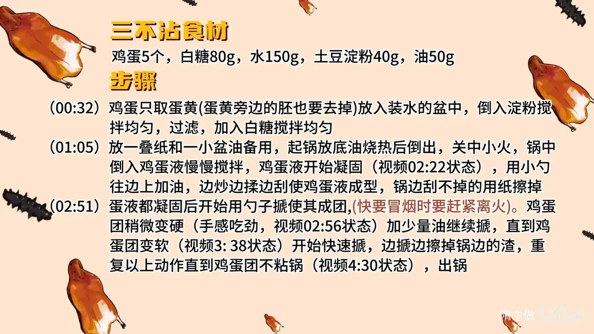

三不沾
隋卞一做。5 个鸡蛋只取蛋黄、连蛋黄旁的胚也去掉，加 150g 水、40g 土豆淀粉搅匀过滤，再加 80g 白糖。中小火下锅慢搅，边炒边揉边往锅边淋油，成团后反复撅压，直到不沾锅、不沾勺、不沾牙。
原视频：https://www.bilibili.com/video/BV1KJ4m1W7ZU
食材
鸡蛋黄、白糖 等 5 样
| 类别 | 用料 | 用量 |
|---|---|---|
| 主料 | 鸡蛋黄 | 5个 |
| 配料 | 水 | 150g |
| 配料 | 土豆淀粉 | 40g |
| 调料 | 白糖 | 80g |
| 调料 | 油 | 50g |
步骤
- 调蛋黄糊：鸡蛋只取蛋黄（蛋黄旁边的胚也要去掉），放入装水的盆中，倒入 40g 土豆淀粉搅拌均匀，过滤后加入 80g 白糖搅拌均匀。
- 下锅炒制：放一叠纸和一小盆油备用。起锅放底油烧热后倒出，关中小火，锅中倒入鸡蛋液慢慢搅拌。蛋液开始凝固时，用小勺往锅边上加油，边炒边揉边刮使蛋液成型，锅边刮不掉的用纸擦掉。
- 撅压成团：蛋液全部凝固后开始用勺子撅，使其成团（快要冒烟时要赶紧离火）。鸡蛋团稍微变硬（手感吃劲）时加少量油继续撅，直到鸡蛋团变软，再开始快速撅，边撅边擦掉锅边的渣，重复以上动作直到鸡蛋团不粘锅，即可出锅。
小贴士
- 全程中小火，锅温接近冒烟就离火，靠挪锅和淋油控温，别让蛋糊上色发黄。
- 锅边的干渣要及时用纸擦掉，否则会结成硬块混进成品里，影响「不沾牙」的口感。
讲解要点
难度：★★★★☆（难在全程控温，火一大蛋糊就上色，还有撅压的手法）
为什么这么做
- 只取蛋黄、连蛋黄旁的白点也揪掉：蛋清和那个白点炒不散，成品上会留下一个个白点，颜色不纯、口感也不细。
- 蛋液要过滤：没弄干净的蛋清和没搅开的淀粉都会被滤出来，糊细了炒出来才没有疙瘩。
- 炒锅一定要厚底：厚底蓄热均匀，薄锅一受热就局部高温，蛋糊下去立刻变色发黄。
- 先润锅、再把油倒出去：锅壁吸足油，蛋糊才不抓锅；底油留太多，蛋糊在锅里打滑，团不起来。
- 边炒边揉边刮，锅边的渣用纸擦掉：不刮不擦，已经凝固的蛋会结成硬块混进成品里，直接影响「不沾牙」。
- 硬了加油、软了快揣：目的是把油揣进蛋团里，蛋团吸足油才不粘锅、不粘勺；趁它变软、结构松的时候揣，油才吃得进去。
- 快冒烟就离火：这道菜最怕上色，靠离火、挪锅控温，火候一过就发黄发干。
容易翻车
- 火大了或者锅太薄，蛋糊下锅就变色，越炒越硬。
- 一次倒太多油，蛋团在锅里打滑，怎么撅都成不了团。
- 锅边的干渣没擦干净，成品里有硬颗粒，吃着沾牙。
- 该快揣的时候慢了，蛋团上劲变硬，越撅越费劲。
- 蛋清没滤净，炒好的三不沾上有白点。
热评补充
- 选锅别只看「无涂层不粘」的宣传：这类铁锅多是铁钛合金熔覆加硅油涂层，只是没有特氟龙涂层，买之前想清楚能不能接受。
原片尾卡

原片文案
AI 字幕校准稿
我希望这期视频之后，让你们在家都能做三不沾。三不沾就是鸡蛋、白糖、水、土豆淀粉，今天我们做的是五个鸡蛋，比例不用记，会给你们放到片尾。
取蛋黄，蛋黄旁边那个白颜色的也要揪掉，只要纯蛋黄。弄完以后放到水里，把淀粉加进去，然后搅匀，搅碎了就可以了。有没弄干净的蛋清，它也会过滤出来；这个蛋清弄不干净的话，炒完以后非常黄的三不沾上会有一个半个的白点。最后把糖倒进去，齐活了。
最关键的是锅里炒的动作，咱们边做边说。旁边备一盆干净油，普通的色拉油或者猪油都可以；再准备几块厨房用纸，叠好了放旁边。我们选的炒锅一定是厚底的，千万千万要注意，底要厚一点的。
把锅拿油润一下，烧热了之后把油倒出去，关中火，把鸡蛋倒进去。看着它慢慢慢慢就开始凝固了，然后边上加油；主要是凝固了、下边要到冒烟那种状态，就赶紧离火，这个手法很关键。
边炒边揉边刮着，勺刮不到的地方，就拿旁边咱们这厨房纸擦。你慢了的话，下面那个鸡蛋就会变色。油是少量加，让它锅润就可以了；边上的渣子全部都要擦干净，否则会影响成品的外形品质。
都凝固了、擦干净了，就开始锤了。看硬了，然后加油；你锤的时候这勺有感觉，就是上劲了，就加油。一定要控制好火，一般都是中小火。
这会儿就要加快速度了，慢慢地加油，你看这锅里边一会就全吸进去了。吸完之后慢慢变得软了，软的时候就要赶紧抓紧时间继续快揣。感觉它上劲了就加油，这个动作的目的就是为了把这油揣到这个团里边去。鸡蛋里边把油吸足了，它就不粘了，哪都不沾了。
不用用牙嚼，轻轻抿一下，呲溜一下就下去了。而且你能吃到它那个糖跟油好香，蛋黄的味道也好香，在你嘴巴里面又软又油滑，还吃不出来咱们用的油那个独有的味道——它是蛋香味比较足，把那点儿味儿全盖过去了。
把锅选好很关键。家里边有的话，最好用不粘的铁锅，会简单很多。以前是没有不粘的铁锅，那就要求师傅技术一定要高；现在有了，那为什么不用呢。大家在家做起来吧，这道菜练会了，面子直接拉满。